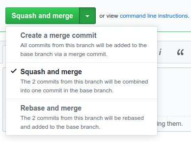
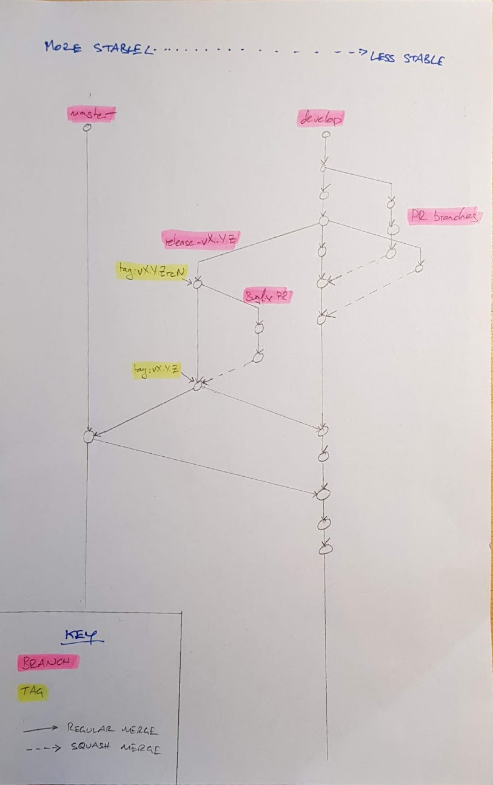

Some notes on how we use git
On keeping the commit history clean
In an ideal world, our git commit history would be a linear progression of
commits each of which contains a single change building on what came
before. Here, by way of an arbitrary example, is the top of git log --graph b2dba0607:
Note how the commit comment explains clearly what is changing and why. Also note the absence of merge commits, as well as the absence of commits called things like (to pick a few culprits): “pep8”, “fix broken test”, “oops”, “typo”, or “Who's the president?”.
There are a number of reasons why keeping a clean commit history is a good thing:
-
From time to time, after a change lands, it turns out to be necessary to revert it, or to backport it to a release branch. Those operations are much easier when the change is contained in a single commit.
-
Similarly, it's much easier to answer questions like “is the fix for
/publicRoomson the release branch?” if that change consists of a single commit. -
Likewise: “what has changed on this branch in the last week?” is much clearer without merges and “pep8” commits everywhere.
-
Sometimes we need to figure out where a bug got introduced, or some behaviour changed. One way of doing that is with
git bisect: pick an arbitrary commit between the known good point and the known bad point, and see how the code behaves. However, that strategy fails if the commit you chose is the middle of someone's epic branch in which they broke the world before putting it back together again.
One counterargument is that it is sometimes useful to see how a PR evolved as it went through review cycles. This is true, but that information is always available via the GitHub UI (or via the little-known refs/pull namespace).
Of course, in reality, things are more complicated than that. We have release
branches as well as develop and master, and we deliberately merge changes
between them. Bugs often slip through and have to be fixed later. That's all
fine: this not a cast-iron rule which must be obeyed, but an ideal to aim
towards.
Merges, squashes, rebases: wtf?
Ok, so that's what we'd like to achieve. How do we achieve it?
The TL;DR is: when you come to merge a pull request, you probably want to “squash and merge”:
.
(This applies whether you are merging your own PR, or that of another contributor.)
“Squash and merge”1 takes all of the changes in the
PR, and bundles them into a single commit. GitHub gives you the opportunity to
edit the commit message before you confirm, and normally you should do so,
because the default will be useless (again: * woops typo is not a useful
thing to keep in the historical record).
The main problem with this approach comes when you have a series of pull requests which build on top of one another: as soon as you squash-merge the first PR, you'll end up with a stack of conflicts to resolve in all of the others. In general, it's best to avoid this situation in the first place by trying not to have multiple related PRs in flight at the same time. Still, sometimes that's not possible and doing a regular merge is the lesser evil.
Another occasion in which a regular merge makes more sense is a PR where you've deliberately created a series of commits each of which makes sense in its own right. For example: a PR which gradually propagates a refactoring operation through the codebase, or a PR which is the culmination of several other PRs. In this case the ability to figure out when a particular change/bug was introduced could be very useful.
Ultimately: this is not a hard-and-fast-rule. If in doubt, ask yourself “do each of the commits I am about to merge make sense in their own right”, but remember that we're just doing our best to balance “keeping the commit history clean” with other factors.
Git branching model
A lot of words have been written in the past about git branching models (no really, a lot). I tend to think the whole thing is overblown. Fundamentally, it's not that complicated. Here's how we do it.
Let's start with a picture:

It looks complicated, but it's really not. There's one basic rule: anyone is free to merge from any more-stable branch to any less-stable branch at any time2. (The principle behind this is that if a change is good enough for the more-stable branch, then it's also good enough go put in a less-stable branch.)
Meanwhile, merging (or squashing, as per the above) from a less-stable to a more-stable branch is a deliberate action in which you want to publish a change or a set of changes to (some subset of) the world: for example, this happens when a PR is landed, or as part of our release process.
So, what counts as a more- or less-stable branch? A little reflection will show that our active branches are ordered thus, from more-stable to less-stable:
master(tracks our last release).release-vX.Y.Z(the branch where we prepare the next release)3.- PR branches which are targeting the release.
develop(our "mainline" branch containing our bleeding-edge).- regular PR branches.
The corollary is: if you have a bugfix that needs to land in both
release-vX.Y.Z and develop, then you should base your PR on
release-vX.Y.Z, get it merged there, and then merge from release-vX.Y.Z to
develop. (If a fix lands in develop and we later need it in a
release-branch, we can of course cherry-pick it, but landing it in the release
branch first helps reduce the chance of annoying conflicts.)
[1]: “Squash and merge” is GitHub's term for this operation. Given that there is no merge involved, I'm not convinced it's the most intuitive name. ^
[2]: Well, anyone with commit access.^
[3]: Very, very occasionally (I think this has happened once in
the history of Synapse), we've had two releases in flight at once. Obviously,
release-v1.2.3 is more-stable than release-v1.3.0. ^